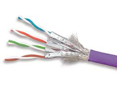

Computer Network to:
Wybierz odpowiedź
Metropolitan Area Network (MAN) to sieć o zasięgu:
Dostęp do sieci rozległej uzyskuje się:
Urządzenia dostępu do sieci:
Do oprogramowania komunikacyjnego (communication software) zaliczamy:
Aby systemy końcowe mogły przesłać sobie nawzajem dane, potrzebne jest do tego:
Wydajny server służący do ciągłej wydajnej pracy powinien mieć:
Ile przełączników umieścisz w szafce sieciowej U19 :
Wyniki testowania sieci, np. światłowodów lub bezprzewodowych mogą być podawane:
Z aplikacjami rozproszonymi mamy do czynienia:
Połączenie wdzwonione polega na tym, że:
W połączeniu wdzwonionym dostawca ISP:
Dostęp do internetu za pomocą DSL oznacza, że użytkownik:
Linia DSL wykorzystuje dwukierunkowy kanał telefoniczny w paśmie częstotliwościowy:
W technologii sieci HFC:
Urządzenie które łączy komputer z lokalną siecią komputerową to:
Popularne złącza kart sieciowych montowanych z płytą główną to:
Urządzeni, którego porty mogą pracować z różnymi prędkościami nazywany:
Urządzenia sieciowe:

Poniższy obrazek przedstawia topologię, w której
Poniższy obrazek przedstawia topologię siatki mieszanej, która:
Najbardziej rozpowszechniona topologia dzisiaj to:
Poniższy obrazek przedstawia przekrój kabla:
Poniższy obrazek przedstawia przekrój kabla:
Poniższy obrazek przedstawia przekrój kabla:
Kategorię kabla miedzianego (skrętki) oznacza się symbolami:
W nowym nazewnictwie kabli miedzianych (skrętek):
......./......
Na poniższym obrazku zaprezentowany jest kabel:
Na poniższym obrazku zaprezentowany jest kabel:
Na poniższym obrazku zaprezentowany jest kabel:

Na poniższym obrazku zaprezentowany jest kabel:

Na poniższym rysunku przedstawiono przekrój kabla F/UTP. Kolejno wg alfabetu zaznaczone są:
Na poniższym rysunku przedstawiono przekrój kabla U/FTP. Kolejno wg alfabetu zaznaczone są:
Kabel z oznaczeniami kat.5e U/FTP, LS0H to:
Kabel z oznaczeniami kat.6 U/FTP, LSFR0H to:
Kabel z oznaczeniami kat.7 S/FTP, LSFR0H to:
Normy określające palność izolacji skrętek określa się za pomocą symbolu:
Znajdź błędną odpowiedź. Kabel światłowodowy stanowi przyszłość teleinformatyki ponieważ
Kabel światłowodowy MM (1300nm) wymaga wzmocnienia sygnału co:
Kabel światłowodowy MM (1310nm) wymaga wzmocnienia sygnału co:

Najważniejszym elementem systemu światłowodowej transmisji danych jest źródło
sygnału (światła). W systemach falowodowych najczęściej wykorzystuje się:
Najważniejszym elementem systemu światłowodowej transmisji danych jest źródło sygnału (światła). W systemach falowodowych najczęściej wykorzystuje się
W podstawowej komunikacji optycznej powszechnie wykorzystuje się
W podstawowej komunikacji optycznej powszechnie wykorzystuje się niewidzialne
promieniowanie fal podczerwieni (IR). Są to kolejne okna optyczne. Pierwsze okno optyczne to fala o długości:
W podstawowej komunikacji optycznej powszechnie wykorzystuje się niewidzialne
promieniowanie fal podczerwieni (IR). Są to kolejne okna optyczne. Drugie okno optyczne to fala o długości:
W podstawowej komunikacji optycznej powszechnie wykorzystuje się niewidzialne
promieniowanie fal podczerwieni (IR). Są to kolejne okna optyczne. Trzecie okno optyczne to fala o długości:
W podstawowej komunikacji optycznej powszechnie wykorzystuje się niewidzialne
promieniowanie fal podczerwieni (IR). Są to kolejne okna optyczne. Czwarte okno optyczne to fala o długości:
W transmisji światłowodowej oprócz generatora optycznego i medium niezbędny jest
także detektor sygnału (światła). Jako fotodetektor standardowo stosuje się:
W transmisji światłowodowej oprócz generatora optycznego i medium niezbędny jest
także detektor sygnału (światła). Jako fotodetektor standardowo stosuje się:
Wewnętrzną część włókna światłowodowego stanowi
Połączenie światłowodowe ustanawiane jest za pomocą
Znajdź fałszywą odpowiedź. Światłowody w praktyce dzielimy na

Światłowody wielomodowe (ang. Multi Mode -MM) przeznaczone są do wprowadzania światła

Konstrukcja wielomodowa światłowodu
Aby zespawać włókna światłowodów
Jakość połączenia uzyskanego przy użyciu metody klejenia włókien w złączu światłowodowym w dużej mierze zależy od
Włókna światłowodowe łączymy
Punkt rozdzielczy IDF wg nomenklatury angielskiej odpowiada polskiemu oznaczeniu
Ile punktów rozdzielczych IDF znajduje się na tym rysunku

Terminując przewody (kabel UTP) łączymy je w pary. Wskaż odpowiedź z poprawnymi nazwami takiej pary
Wskaż prawidłowy PIN i Parę w sekwencji 568A dla kabla koloru niebieskiego
Wskaż prawidłową odpowiedź. Oznaczenie R2 w poniższych sekwencjach dotyczy kabla koloru:
Wskaż prawidłową odpowiedź. Oznaczenie T4 w poniższych sekwencjach dotyczy kabla koloru:
Jaką sekwencję i polaryzacje przedstawia poniższy obrazek
Poniższy obrazek przedstawia wtyk
Poniższy obrazek przedstawia wtyk
Poniższy obrazek przedstawia
Wskaż nieprawidłową odpowiedź. Protokół TCP
Strumieniowa transmisja magazynowanych danych audio – wideo
Protokół warstwy transportowej obsługującej szyfrowanie to
Protokół warstwy aplikacji RTP ma zastosowanie w
Protokół HTTP jest protokołem bezstanowym tzn.
Klient HTTP często używa metody DELETE
Klient HTTP często używa metody HEAD
Gdy sieć LAN używa serwera pośredniczącego to
Wskaż błędną odpowiedz. Do danych sterujących protokołu FTP zaliczamy
Protokół FTP korzysta z niezależnego połączenia sterującego, tzn., że
Sesja FTP client – serwer (zdalny host) dla połączeń sterujących ma charakter
Protokół służący do umieszczania plików na serwerze i pobieranie ich to
Protokół FTP
Standardowy protokół SMTP podczas przesyłania wiadomości
Klient SMTP nawiązuje połączenie TCP z serwerem SMTP za pośrednictwem portu
Protokół SMTP bazuje na protokole transportowym
Wskaż nieprawdziwą odpowiedź. Jakie są cechy różnicujące protokoły HTTP I SMTP?
Bartek właśnie otrzymał nową wiadomość od Alicji. Jego agent pocztowy mógł pobrać nowego @ ponieważ używa protokołu warstwy aplikacji
Bartek właśnie otrzymał nową wiadomość od Alicji. Jego agent pocztowy mógł pobrać nowego @ ponieważ używa protokołu warstwy aplikacji
Domena .com oznacza
Kiedy jeden host PC1 będzie przesyłał dane do hosta PC2 w obrębie tej samej domeny kolizyjnej to
Czas życia TTL (Time to Live) – określa maksymalny czas przebywania pakietu w sieci. Każdy ruter, przez który przechodzi pakiet, zmniejsza jego wartość życia o
Protokół IP jest protokołem zawodnym, to znaczy,
Kiedy pakiet zostanie przesłany do innej sieci, to
Do protokołów rutingu zaliczamy protokół
Protokół który wykorzystuje algorytm wektora odległości (distance-vector) to
Protokół RIP jest stosowany w mniejszych sieciach ze względu na